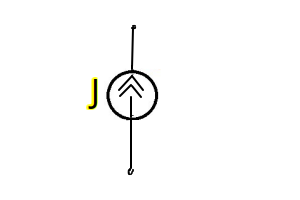
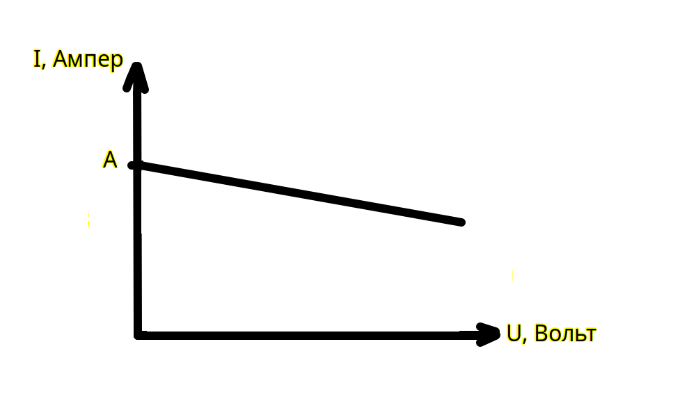

Урок 5. Источник тока идеальный и реальный.
Источник тока
Источник тока — это устройство или система, которая поддерживает постоянную силу тока в электрической цепи независимо от изменения сопротивления нагрузки в пределах своих возможностей. Примерами источника тока могут быть: катушка индуктивности либо аккумулятор с парралельно подключенным резистором. Если внутреннее сопротивление источника питания намного больше чем внешнее сопротивление нагрузки то данный источник питания можно представить как источник тока () иначе если внутреннее сопротивление источника питания намного меньше сопротивления нагрузки то данный источник питания можно представить как источник напряжения ()
Виды источников тока
-
Идеальный источник тока
- Теоретическая модель, которая поддерживает фиксированный ток через нагрузку, независимо от её сопротивления.
- Напряжение на выходе может изменяться бесконечно, чтобы компенсировать изменения нагрузки.
- При бесконечно увеличивающемся сопротивлении нагрузки у нас будет бесконечно увеличиваться напряжение нагрузки. И наоборот, при снижении сопротивления нагрузки у нас будет снижаться напряжение нагрузки.
- Схема замещения идеального источника тока:

- ВАХ (внешняя/выходная характеристика) источника тока:

- При то
-
Реальный источник тока
-
Учитывает ограничения, такие как максимальное выходное напряжение и внутреннее сопротивление.
-
При достижении предельного напряжения на нагрузке ток перестаёт быть постоянным.
-
- С увеличением напряжения будет снижаться выходной ток источника питания
-
Схема замещения реального источника тока. Параллельное подключение резистора:

- ВАХ (внешняя/выходная характеристика) реального источника тока:

-
Основные характеристики источника тока
-
Сила тока ()
- Значение тока, которое источник поддерживает в цепи.
-
Максимальное напряжение ()
- Максимальное напряжение, которое может быть создано источником для поддержания заданного тока.
-
Внутреннее сопротивление ()
- Определяет, как источник ведёт себя при изменении сопротивления нагрузки. Для реальных источников обычно очень велико, приближаясь к бесконечности в идеальном случае.
Уравнение для реального источника тока
Для реального источника тока связь между током, напряжением и нагрузкой определяется выражением:
где:
- — напряжение на внутреннем сопротивлении источника и нагрузке,
- — сопротивление нагрузки.
Пример работы источника тока
-
Если реальный источник поддерживает ток при нагрузке , то напряжение на нагрузке составит:
-
Если нагрузка увеличится до , напряжение возрастёт до:
При этом ток останется неизменным, если источник находится в пределах своего рабочего диапазона.
Применение источников тока
-
Зарядка аккумуляторов:
Поддержание постоянного тока для зарядки батарей. -
Светодиоды (LED):
Питание светодиодов, которые требуют постоянного тока для стабильной работы. -
Тестирование электрических цепей:
Использование источника тока для проверки характеристик цепей и компонентов. -
Медицинское оборудование:
В устройствах для стимулирования мышц и нервов, где требуется точный контроль тока.
ВАХ источника тока
-
Идеальный источник тока:
ВАХ представляет собой горизонтальную линию. Ток остаётся постоянным (), независимо от изменения напряжения. -
Реальный источник тока:
ВАХ сначала выглядит как горизонтальная линия, но затем ток начинает уменьшаться при достижении максимального напряжения ().
Источник тока является фундаментальным компонентом в электротехнике и электронике, обеспечивая стабильный ток в самых различных приложениях.